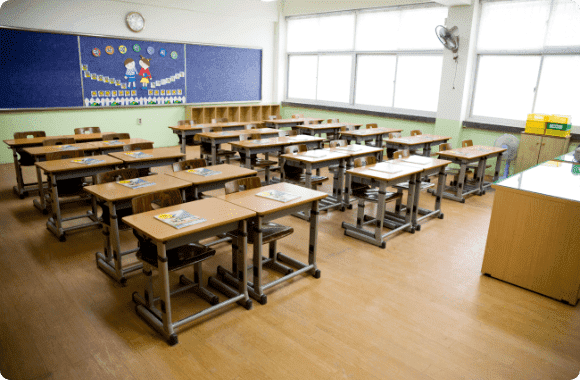

- AIIR Scout란?
- AIIR Scout 특장점
- 다이어그램
- 주요기능
- 적용분야
관리자에게 최적의 모니터링 환경을 제공합니다

지능형 비디오 분석으로 24시간 관제기능 제공보호
알체라의 AI 영상 분석 기술을 사용하여 언제 어디서든 접근 가능한 관리자 웹으로 효율적이고 정확한 전체 시설 관리를 경험해 보세요.
사전 알림 및 실시간 추적으로 사고 사전 방지
다양한 알림 및 추적 기능을 통해 시설 내 이상상황 발생 시 신속한 대응이 가능한 모니터링 시스템을 제공합니다.

인구 밀도가 높은 환경의 출입관리에 최적화
선진화된 알체라의 AI 얼굴 인식기술을 활용하여 인구 밀도가 높은 환경에서의 출입관리도 원활하게 운영 가능합니다.
더 안전한 시설을 위한 AI관제 솔루션
AIIR Scout(에어 스카우트)는 알체라의 영상인식 AI 기술을 시설의 CCTV에 적용한 솔루션으로 24시간 관리자의
도우미가 되어 시설을 안전하게 보호합니다. 관제 지역 내의 입출입 정보, 사용자의 위치 정보 및 동선 파악, 위험 행동
인식뿐만 아니라 사물 정보도 인식하여 시설 안의 상황을 모니터링 합니다.
WHY AIIR SCOUT?
관리자에게 최적의 모니터링 환경을 제공합니다
얼굴인식과 고도화된 사람검출을 적용한 통합 영상인식 기술
얼굴인식 뿐 아니라 고도화된 사람검출(Person Detection + Pose Estimation)방식으로 유사도를 파악, 보행 및 혼잡한 환경에서도 빠르고 정확하게 대상을 인식 합니다. (최대 5M거리의 보행자 정보 확인 가능)
기존 CCTV 장비에 쉽게 적용 가능한 클라우드향 솔루션
클라우드 지향 솔루션으로서 서버 구축을 위한 최소한의 하드웨어 설치로 AI 클라우드 서버와 연동하여 쉽고 빠른 성능 업데이트가 가능하며, 기존의 CCTV 그대로 사용할 수 있습니다.
별도의 설치 필요없는 웹/모바일 대시보드
웹과 모바일 구분없이 접근 가능한 URL를 제공하여 별도의 어플리케이션 설치 없이 쉽게 언제 어디서든 모니터링이 가능합니다.
HOW IT WORKS
기존 CCTV 에 인공지능을 더하세요
AIIR Scout는 CCTV와 Stand-alone 디바이스를 통해 AI로 시설의 모든 사용자와 물체를 추적하고 관리합니다. 또한
알체라의 AI출입관리 솔루션인 AIIR Pass와 연동하여 출입문 개폐등의 출입통제 기능도 구현하실 수 있습니다.
KEY FEATURES
실시간 모니터링 및 로그 확인
무단 접근 알림
프로필 관리
사람 감지 및 추적
행동 추적
실시간 모니터링 및 로그 확인
날짜와 장소를 설정하여 실시간으로 시설 안의 입출입 현황을 확인하고 관리할 수 있습니다.

무단 접근 알림
등록 사용자 뿐 아니라 미등록 사용자에 대해서도 감지하며, 필요한 경우 이와 관련한 알람 기능을 제공합니다.

프로필 관리
관리자가 사용자의 속성(카테고리) 를 정의하여, 카테고리 별로 사용자 관리(등록, 삭제 등) 가 가능합니다.
사람 감지 및 추적
탐지 및 지속적인 추적을 통해 사람이나 물체를 찾습니다.
행동 추적
방화나 월담 등과 같은 지정한 이상행동을 감지하고 패턴을 분석하여 모니터링 하는 관제 시스템 구축이 가능합니다.
INDUSTRY USAGE
다수인원에 대한 모니터링 및 관제가 필요한
다양한 비즈니스 현장에 활용 가능합니다.
- 교육 기관
- 호텔 / 카지노
- 공유오피스
- 건설
- 병원
- 


-
- 지정된 구역의 무단 접근 방지
- 시설의 각 층에서 학생 찾기
- 무단이탈자 추적
- 얼굴인식으로 출석체크
-
- 각 지역의 트래픽 모니터링
- 비정상적인 행동 추적
- 지정된 구역의 무단 접근 방지
- 차단된 액세스 제한
-
- 방문자 로그 제공
- 비정상적인 행동 추적
- 등록되지 않은 사람이 출입할 때 알림 수신
-
- 각 지역의 개인 모니터링
- 무단이탈자 추적
- 미등록자 출입 시 알림 수신
- 비정상적인 행동 추적
-
- 임상 시험을 위해 개인 모니터링
- 시설에서 환자 찾기
- 비정상적인 행동 추적
- 미등록자 출입 시 알림 수신


알체라의 AI 얼굴인식 기술을 직접 체험해보세요
AIIR SDK 데모를 무료로 이용해보실 수 있습니다. 지금 신청하세요!